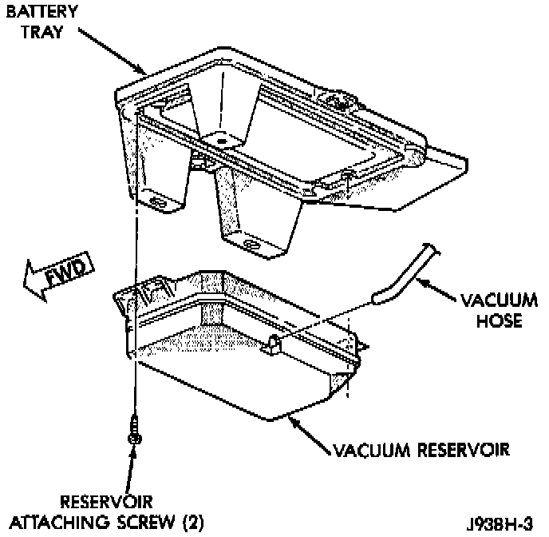

Cruise Control Vacuum Reservoir: Service and Repair
REMOVAL1. Disconnect both battery cables at battery (negative cable first).
2. Remove battery hold-downs.
3. Remove battery from battery tray
4. Remove 5 bolts securing battery tray
Vacuum Reservoir:

5. Pull up battery tray and remove vacuum hose from reservoir.
6. Remove 2 screws holding reservoir to battery tray.
INSTALLATION
1. Install vacuum reservoir. Tighten bolts (screws) to 3 N.m (30 in.lbs.) torque.
2. Connect vacuum hose at reservoir.
3. Install battery tray mounting bolts. Tighten to 10 N.m (90 in.lbs.) torque.
4. Install battery.
5. Install battery holddown and bolts. Tighten to 10 N.m (90 in.lbs.) torque.
6. Install battery cable clamp bolts. Tighten to 8.5 N.m (75 in.lbs.) torque.